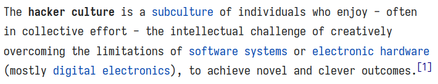
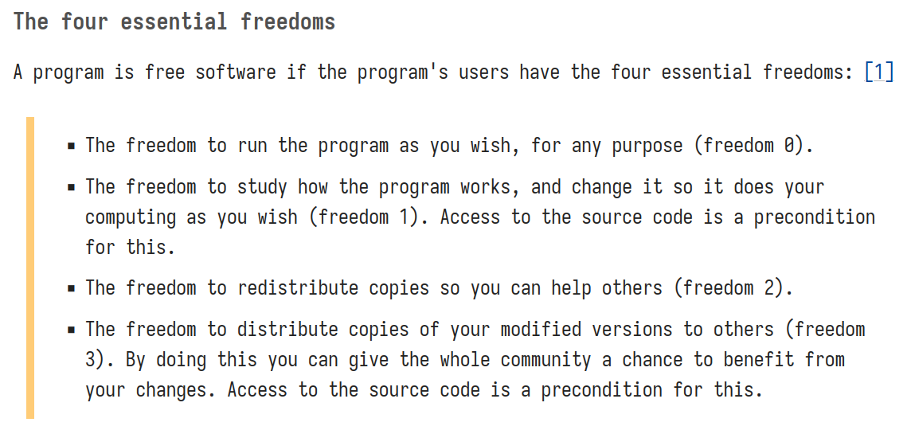

BITS-SOS
RAF Orientation, Day 3Hacker Culture

MIT's Model Railroad Club

MIT's Artificial Intelligence Lab
Free Software Movement
RMS
Linus
Present Day - BPHC

The Missing Open Source Culture
As you might have noticed, Linux adoption is very low on campus among students and faculty alike! As a premier Technological Institute, we should have a much, much higher rate of Linux adoption.
Why do we need it?

GNU/Linux provides a better environment for programming.

Windows PATHs are a nightmare to set and manage
To set up programming-related software, users often have to modify Window's PATH. This is widely agreed to be notoriously difficult, not to mention time-consuming. Package managers automatically set PATH variables when required on Linux, and it is much easier to do so manually when the need arises.
Windows has no package manager
Package managers are very useful for getting free software with one click. This includes applications such as VLC, Blender, Audacity etc. and programming software such as Python, GCC, Clang etc.
Pop!OS' Package Manager

Freedom

Enter SOS
Society for Open Software (SOS) is a newly formed society with the purpose of increasing awareness of free and open source software and boost student engagement with the open source community.

What we do
Workshops

Community for Linux users
Because of the low adoption of GNU/Linux on campus, users might run into issues they need help with. In such cases, a strong Linux User community is essential! We aim to provide such a community through bi-weekly sessions and online groups.
Contacts
| President | Secretary |
|---|---|
| Sarthak Shah | Soumitra Shewale |
| 8767059061 | 6309481575 |